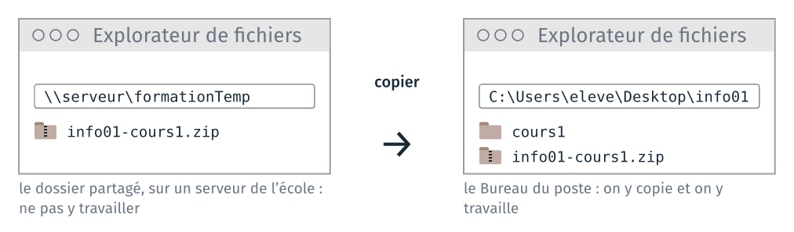
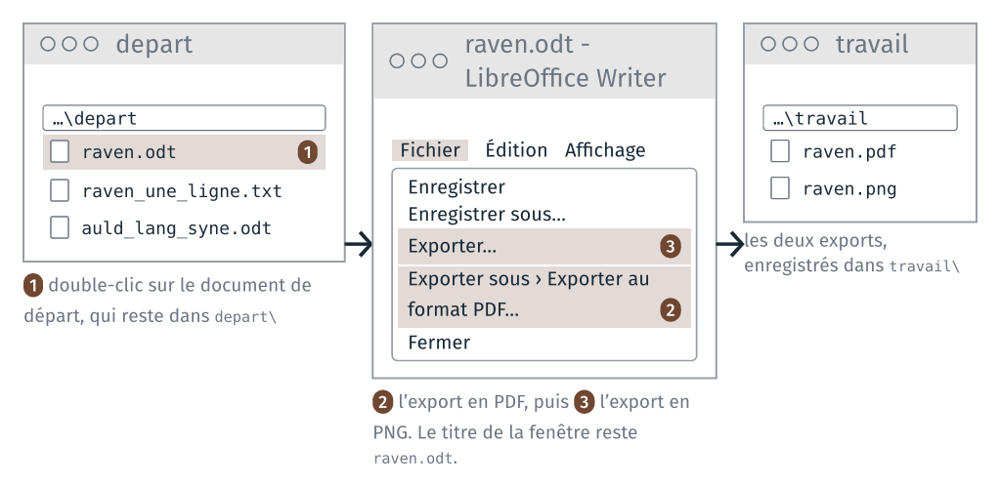
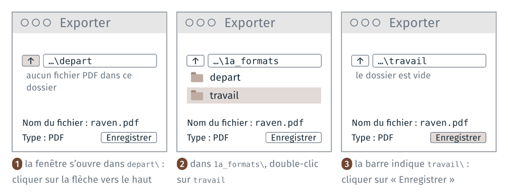

TD 1a — Fichiers, formats et extensions#
Note
Les fichiers des TD de la séance sont dans l’archive info01-cours1.zip.
Le TD commence par copier les fichiers de la séance sur le poste. Il manipule ensuite les fichiers d’un même texte, le poème The Raven d’Edgar Allan Poe (1845), sous plusieurs formes : un document LibreOffice et un fichier texte. On les exporte et on les ouvre avec différents logiciels, pour distinguer l’extension d’un fichier et son contenu. Il se termine dans le dossier partagé, où toute la salle modifie le même fichier. Il dure un quart d’heure.
Tout se fait avec l’explorateur de fichiers, LibreOffice et un éditeur de texte, le Bloc-notes ou Notepad++. Aucune commande n’est nécessaire.
Le dossier depart\ contient aussi les mêmes fichiers pour un second texte,
Auld Lang Syne de Robert Burns (1788). Qui a fini en avance peut refaire
les étapes avec lui.
Étape |
Objectif |
Action |
|---|---|---|
travailler sur le disque de l’ordinateur, hors du dossier partagé |
copier les fichiers de la séance sur le poste |
|
travailler sur des copies, à côté des fichiers livrés |
préparer le dossier du TD |
|
produire un même texte dans plusieurs formats |
exporter un document en PDF et en PNG, puis l’enregistrer en texte |
|
déterminer quels fichiers permettent de sélectionner, de chercher et de modifier le texte |
ouvrir les quatre fichiers, et essayer ces trois opérations dans chacun |
|
comparer fichiers texte et fichiers binaires |
comparer la taille de trois fichiers, puis les lire avec un éditeur de texte |
|
voir de quoi est fait un |
extraire le contenu d’une copie de |
|
voir ce que devient un fichier du dossier partagé modifié par plusieurs personnes |
modifier à plusieurs un fichier partagé |
Chaque étape commence par un encadré qui donne son objectif. Ce que chaque étape fait constater est expliqué à la fin du guide, dans « Ce que le TD fait constater » : faire l’étape d’abord, et noter ce qu’on observe, avant de lire l’explication.
Rappels avant de commencer#
La barre d’adresse. En haut de chaque fenêtre de l’explorateur de
fichiers, la barre d’adresse indique le dossier ouvert. Un clic dans la
barre affiche son chemin complet, comme C:\Users\eleve\Desktop\info01.
La flèche vers le haut, à sa gauche, ouvre le dossier parent, celui qui
contient le dossier ouvert.
Ouverture d’un fichier avec un autre logiciel. Un double-clic ouvre un fichier avec le logiciel que Windows associe à son extension. Pour en choisir un autre : clic droit sur le fichier, « Ouvrir avec », puis le logiciel. S’il n’est pas dans la liste, « Choisir une autre application ».
La fenêtre d’enregistrement. Enregistrer ou exporter ouvre une fenêtre qui demande un dossier et un nom de fichier. Le dossier est celui de sa barre d’adresse : la lire avant de cliquer sur « Enregistrer ». Elle s’ouvre dans un dossier choisi par le logiciel, souvent celui du document ouvert.
Étape 1 · Récupération des fichiers de la séance#
Objectif : copier
info01-cours1.zipdepuisformationTempsur le Bureau, et l’extraire dans un dossierinfo01.
Deux emplacements#
Avant la séance, l’archive est déposée dans le dossier partagé
formationTemp, sur un serveur de l’école. Il faut la copier sur le poste,
puis la décompresser, avant d’ouvrir le premier fichier.

Ne pas travailler dans le dossier partagé. formationTemp est le même
dossier pour tous les élèves. Un fichier enregistré là est visible par tous,
et il peut être écrasé par un autre élève, ou effacé avant la séance
suivante.
Avant d’ouvrir un fichier, regarder la barre d’adresse de l’explorateur :
elle doit commencer par C:\Users\eleve\Desktop\info01. Si elle commence
par \\, ou par la lettre d’un lecteur réseau (icône propre dans « Ce PC »),
on est dans le dossier partagé.
Copie de l’archive dans un dossier du Bureau#
Sur le Bureau, double-cliquer sur le raccourci
formationTemp.Windows demande un nom d’utilisateur et un mot de passe : entrer ses identifiants d’élève.
Le dossier s’ouvre dans l’explorateur de fichiers. Il contient l’archive de la séance,
info01-cours1.zip.Dans
formationTemp, clic droit surinfo01-cours1.zip, Copier (ouCtrl+C).La première fois : sur le Bureau, clic droit sur un endroit vide, Nouveau, Dossier, et le nommer
info01.Ouvrir le dossier
info01du Bureau, clic droit sur un endroit vide, Coller (ouCtrl+V). La copie prend quelques secondes.Fermer la fenêtre de
formationTemp. Tout ce qui suit se fait dansinfo01.
L’explorateur affiche le Bureau sous le nom « Bureau ». Son nom réel,
celui qu’on lit dans un chemin ou dans un terminal, est Desktop.
Test : dans formationTemp, la barre d’adresse commence par
\\ ; dans info01, elle indique C:\Users\eleve\Desktop\info01.
Décompression de l’archive#
Un fichier .zip est un seul fichier, qui contient des dossiers et des
fichiers compressés. L’explorateur de Windows l’affiche comme un dossier :
un double-clic l’ouvre, et montre son contenu. Ce n’est pas un dossier :
un fichier ouvert par double-clic depuis l’archive est d’abord extrait dans un dossier temporaire ; ce qu’on y enregistre reste dans ce dossier temporaire, et il est perdu à la fermeture ;
VS Code, JupyterLab et Spyder n’ouvrent pas un dossier qui est dans un
.zip. Dans leur fenêtre « Ouvrir un dossier », l’archive est un fichier, et on ne peut pas entrer dedans.
Il faut donc extraire l’archive, une fois, avant de commencer :
Dans
info01, clic droit surinfo01-cours1.zip, « Extraire tout… ».Une fenêtre demande le dossier de destination. Elle propose
C:\Users\eleve\Desktop\info01\info01-cours1. Effacer la fin,\info01-cours1, pour laisserC:\Users\eleve\Desktop\info01. L’archive contient déjà un dossiercours1; sans cette correction, on obtientinfo01\info01-cours1\cours1, un dossier de trop, et les chemins des diapositives ne correspondent plus.Laisser cochée « Afficher les fichiers extraits une fois l’opération terminée », puis cliquer sur « Extraire ».
Le dossier
cours1s’ouvre. Il contient un dossier par TD, numéroté dans l’ordre de la séance (1a_formats,1b_terminal…), avec dans chacun la feuille du TD et son guide détaillé. Il contient aussi un fichierREADME.md, qui liste les TD, et les diapositives de la séance,diapositives_cours1.pdf.
Dans info01, il y a maintenant l’archive info01-cours1.zip, avec une
icône de fermeture éclair, et le dossier cours1, avec une icône de
dossier. Tout le travail se fait dans le dossier cours1. L’archive peut
être supprimée, ou gardée pour refaire un TD depuis ses fichiers de départ.
Pour voir l’extension .zip dans le nom, l’explorateur doit afficher les
extensions (Organisation des TD).
La page « Récupérer les fichiers d’une séance » du site du cours détaille
ces opérations, et ce qu’on fait du dossier info01 à la fin de la séance.
Test : cours1 apparaît à côté de l’archive, dans info01.
Bureau\
└── info01\
├── info01-cours1.zip
└── cours1\
├── 1a_formats\
├── 1b_terminal\
├── 1c_programme\
├── 1d_notebook\
├── diapositives_cours1.pdf
└── README.md
Organisation des TD#
Objectif : retrouver les deux dossiers du TD 1a,
depart\ettravail\, et afficher les extensions de leurs fichiers.
Les deux dossiers du TD#
Ouvrir info01\cours1\1a_formats\. Le dossier contient :
1a_formats\
├── depart\
│ ├── raven.odt le poème, document LibreOffice
│ ├── raven_une_ligne.txt le poème, en texte sur une seule ligne
│ ├── raven_une_ligne.donnees le même fichier, avec une autre extension
│ └── auld_lang_syne… les mêmes fichiers pour le second texte
├── illustrations\ les images du guide
├── travail\ vide
├── guide.ipynb le guide, en notebook
├── guide_1a_formats.html le guide, en page web
├── guide_1a_formats.pdf le guide, en PDF
└── td_1a_formats.pdf la feuille du TD
Ne pas modifier les fichiers de depart\. Enregistrer dans travail\ les
copies et les fichiers que vous produisez. Si une copie est abîmée, on en
refait une à partir de depart\.
Le chemin complet d’un fichier de départ, et celui d’un fichier exporté, sont :
C:\Users\eleve\Desktop\info01\cours1\1a_formats\depart\raven.odt
C:\Users\eleve\Desktop\info01\cours1\1a_formats\travail\raven.pdf
La suite du guide écrit les chemins à partir de 1a_formats\.
Affichage des extensions#
Ouvrir depart\. Windows masque par défaut les extensions des types de
fichiers qu’il connaît. Dans l’explorateur : menu Affichage, Afficher,
cocher « Extensions de noms de fichiers ». Sous macOS : Finder, Réglages,
Avancé, « Afficher tous les suffixes de fichiers ». Le réglage se fait une
fois, et sert tout le semestre.
Test : la barre d’adresse de l’explorateur se termine par
cours1\1a_formats\depart (ou « Bureau > info01 > cours1 > 1a_formats >
depart »), et raven.odt s’affiche avec son extension.
Étape 2 · Conversion d’un document en d’autres formats#
Objectif : exporter
depart\raven.odten PDF et en PNG, puis l’enregistrer en texte, danstravail\, avec LibreOffice Writer.
Le document de départ est depart\raven.odt. Dans cette étape, vous
l’ouvrez dans Writer, puis vous l’exportez en PDF, puis en PNG, dans
travail\. La commande Exporter enregistre une copie du document dans un
nouveau fichier. Le document ouvert dans Writer reste raven.odt, et il
n’est pas modifié. Vous l’enregistrez enfin en texte, par Enregistrer sous.
Cette commande remplace le document ouvert par la copie.

Dossier au début de l’étape :
1a_formats\
├── depart\
│ ├── raven.odt le document de départ
│ └── …
└── travail\ vide
2.1 Ouverture du document de départ#
Dans l’explorateur, ouvrir
depart\.Double-cliquer sur
raven.odt. LibreOffice Writer s’ouvre et affiche le poème.
Test : la barre de titre de Writer indique
raven.odt - LibreOffice Writer.
2.2 Export en PDF#
Menu Fichier, Exporter sous, Exporter au format PDF…
Une fenêtre « Options PDF » s’affiche. Garder les réglages, et cliquer sur « Exporter ».
La fenêtre d’enregistrement s’ouvre dans
depart\, le dossier du document. Cliquer sur la flèche vers le haut, à gauche de la barre d’adresse : la fenêtre affiche1a_formats\. Double-cliquer surtravail.Le nom proposé est
raven.pdf. Cliquer sur « Enregistrer ».

Test : dans l’explorateur, travail\ contient raven.pdf. La
barre de titre de Writer indique toujours raven.odt : l’export n’a pas
changé le document ouvert.
2.3 Export en PNG#
Menu Fichier, Exporter… L’export en image se trouve là : « Enregistrer sous » ne propose pas le format PNG.
Dans la fenêtre d’enregistrement, lire la barre d’adresse. Si elle n’indique pas
travail\, y aller comme en 2.2.Dans la liste « Type », choisir PNG. Le nom devient
raven.png.Cliquer sur « Enregistrer ». Si une fenêtre d’options s’affiche, la valider par « OK ».
Test : travail\ contient raven.pdf et raven.png.
2.4 Enregistrement en texte#
Menu Fichier, Enregistrer sous…
Dans la liste « Type », choisir « Texte (.txt) ». Le nom devient
raven.txt.Vérifier que la fenêtre affiche
travail\, puis cliquer sur « Enregistrer ».Writer demande quel format garder. Cliquer sur « Utiliser le format Texte ! ».
Test : travail\ contient raven.txt. La barre de titre de
Writer indique maintenant raven.txt : Enregistrer sous a remplacé le
document ouvert par la copie.
2.5 Fermeture de Writer#
Fermer Writer. Si une fenêtre demande d’enregistrer les modifications, répondre « Ne pas enregistrer ». Le document de départ reste tel qu’il a été livré.
Dossier à la fin de l’étape :
1a_formats\
├── depart\
│ ├── raven.odt inchangé
│ └── …
└── travail\
├── raven.pdf l'export en PDF
├── raven.png l'export en image
└── raven.txt la copie en texte
Dépannage#
raven.pdfouraven.pngest dansdepart\. La fenêtre d’enregistrement était restée dansdepart\. Dans l’explorateur, clic droit sur le fichier, Couper, puis clic droit danstravail\, Coller.Le format PNG n’apparaît pas. Il n’est proposé que par Fichier, Exporter…
Writer a été fermé avant les exports. Le rouvrir par un double-clic sur
depart\raven.odt, et reprendre en 2.2.
Étape 3 · Manipulation du texte selon le format#
Objectif : comparer
depart\raven.odtet ses trois copies detravail\,raven.txt,raven.pdfetraven.png, et déterminer quels fichiers permettent de sélectionner, de chercher et de modifier le texte.
Ouvrir les quatre fichiers l’un après l’autre. Dans chacun, sélectionner une
ligne du poème, chercher un mot avec Ctrl + F, puis essayer de modifier
un mot.
depart\raven.odt: double-clic. Writer l’ouvre.travail\raven.txt: dans Writer, menu Fichier, Ouvrir. Le même logiciel ouvre le.odtet le.txt, et la comparaison ne porte que sur le fichier.travail\raven.pdf: double-clic, pour l’ouvrir dans le lecteur PDF du poste. Ouvert depuis LibreOffice, un PDF passe dans Draw, où chaque ligne devient un cadre de texte modifiable.travail\raven.png: dans Writer, menu Fichier, Ouvrir. Le.pngs’ouvre dans Draw, comme une image posée sur une page.
À noter : pour chacun des quatre fichiers, si l’on peut sélectionner, chercher et modifier le texte, et comment le titre s’affiche.
Ce que l’étape fait constater : fin du guide.
Étape 4 · Contenu d’un fichier dans un éditeur de texte#
Objectif : comparer la taille de trois fichiers de
depart\,raven_une_ligne.txt,raven_une_ligne.donneesetraven.odt, puis ce qu’un éditeur de texte affiche pour chacun.
Les trois fichiers sont depart\raven_une_ligne.txt,
depart\raven_une_ligne.donnees et depart\raven.odt.
Dans l’explorateur, dans
depart\, afficher la taille des fichiers : Affichage, Détails, puis lire la colonne Taille.Ouvrir
raven_une_ligne.txtavec le Bloc-notes ou avec Notepad++ : clic droit, Ouvrir avec, puis l’éditeur choisi.Ouvrir de la même façon
raven_une_ligne.donnees, puisraven.odt, et comparer avecraven_une_ligne.txt.Fermer chaque fenêtre sans enregistrer.
Attention : enregistrer un .odt depuis un éditeur de texte modifie ses
octets, et Writer ne peut plus l’ouvrir.
À noter : la taille de chaque fichier ; pour chaque fichier, si le contenu est lisible dans l’éditeur choisi.
Ce que l’étape fait constater : fin du guide.
Dépannage#
Une fenêtre demande d’enregistrer à la fermeture. Répondre « Ne pas enregistrer », pour chacun des trois fichiers.
Notepad++ n’est pas dans « Ouvrir avec ». Lancer Notepad++ depuis le menu Démarrer, puis ouvrir les fichiers par son menu Fichier, Ouvrir. S’il n’est pas installé sur le poste, faire l’étape avec le Bloc-notes.
Un
.odta été enregistré par un éditeur de texte. Il ne s’ouvre plus dans Writer. Le recopier depuis l’archiveinfo01-cours1.zip, qui garde les fichiers de départ.
Étape 5 (facultative) · Structure d’un fichier .odt#
Objectif : copier
depart\raven.odtdanstravail\sous le nomraven.zip, l’extraire, puis déterminer dans quels fichiers de l’archive se trouvent le texte du poème et sa mise en forme.
Cette partie est facultative, pour qui a fini en avance. Elle se fait sur une
copie, et depart\raven.odt reste intact.
Dans
depart\, clic droit surraven.odt, Copier, puis danstravail\, clic droit, Coller.Renommer la copie en
raven.zip: clic droit, Renommer. Windows demande de confirmer le changement d’extension ; répondre « Oui ».Clic droit sur
raven.zip, Extraire tout…, puis « Extraire ». Windows crée le dossiertravail\raven\.Dans
travail\raven\, ouvrircontent.xml, puisstyles.xml, avec le Bloc-notes ou Notepad++ : clic droit, Ouvrir avec.
L’explorateur ne reconnaît une archive qu’à son extension. Sans le changement de nom, il ne propose pas « Extraire tout ».
Test : travail\raven\ contient content.xml et styles.xml.
À noter : la liste des fichiers de l’archive, et ce que contient chacun des deux fichiers ouverts.
Ce que l’étape fait constater : fin du guide.
Étape 6 · Modification à plusieurs d’un fichier partagé#
Objectif : ajouter chacun une ligne au même fichier du dossier partagé,
info01-salle.txt, puis relire ce fichier.
Attention : toute la salle fait cette étape en même temps. Attendre le signal de l’enseignant avant de commencer.
Par exception à la règle de l’étape 1, chaque élève modifie dans cette étape
un fichier du dossier partagé, info01-salle.txt, que l’enseignant a déposé
pour l’occasion. Ne modifier aucun autre fichier de formationTemp.
Sur le Bureau, double-cliquer sur le raccourci
formationTemp.Au premier signal, clic droit sur
info01-salle.txt, Ouvrir avec, Bloc-notes. Laisser la fenêtre ouverte, et attendre le second signal.Au second signal, écrire son prénom sur une ligne, puis enregistrer avec
Ctrl+S.Fermer le Bloc-notes, puis rouvrir
info01-salle.txtde la même façon.
Toute la promotion peut lire ce fichier. N’y écrire que son prénom.
À noter : combien de prénoms le fichier contient, et si le sien y est.
Ce que l’étape fait constater : fin du guide.
Dépannage#
Windows refuse d’enregistrer. Le poste n’a pas le droit d’écrire dans
formationTemp: prévenir l’enseignant, et lire le fichier sur le poste d’un voisin.Le fichier s’ouvre dans Notepad++ ou dans un autre logiciel. Le fermer, et passer par clic droit, Ouvrir avec, Bloc-notes : Notepad++ propose de recharger un fichier modifié par un autre poste, et l’étape ne montre plus rien.
Ce que le TD fait constater#
Cette section se lit après avoir fait les étapes.
Étape 3 : quatre fichiers d’un même document#
Fichier |
Sélectionner, chercher, modifier le texte |
|---|---|
|
les trois opérations fonctionnent |
|
les trois opérations fonctionnent ; le titre a la même police et la même taille que les strophes |
|
on peut sélectionner et chercher le texte ; le lecteur PDF ne permet pas de le modifier |
|
aucune des trois : l’image ne contient que des pixels, de la première page seulement |
Le .odt et le .txt permettent tous deux de modifier le texte. Le .txt
ne contient que les caractères, et Writer le signalait à l’enregistrement : le
format Texte ne garde pas la mise en forme. Le .odt garde le texte et sa
mise en forme.
Un PDF décrit la page : les caractères y sont rangés avec leur position. Une image PNG ou JPEG enregistre la couleur de chaque pixel de la page, et le texte n’y est plus une suite de caractères.
Étape 4 : taille et affichage dans un éditeur de texte#
L’explorateur affiche 2 Ko pour raven_une_ligne.txt et
raven_une_ligne.donnees, et 8 Ko pour raven.odt, avec les mêmes
strophes. Le .odt contient aussi la mise en forme et des informations sur
le document, compressées.
Fichier |
Dans le Bloc-notes |
Dans Notepad++ |
|---|---|---|
|
le poème, lisible en entier |
le même |
|
le même poème |
le même |
|
|
les mêmes, et des |
Un éditeur de texte affiche un caractère par octet, selon la table
d’encodage, et n’interprète rien d’autre : ni image, ni mise en forme. Ce qui
n’a pas de caractère correspondant apparaît en carré ou en signe étrange ;
Notepad++ marque NUL les octets de valeur 00.
raven_une_ligne.donnees est le même texte que raven_une_ligne.txt, sous
une extension qu’aucun logiciel ne connaît : l’extension ne change rien au
contenu. raven.odt n’est pas du texte, et son nom ne le disait pas : seule
l’ouverture dans un éditeur de texte le montre. Les deux
caractères PK du début sont la signature d’une archive ZIP, dont un .odt
est une forme. Le cours 3 revient sur la différence entre fichier texte et
fichier binaire.
Enregistrer le .odt depuis un éditeur de texte l’abîmerait. Le Bloc-notes
remplace les octets qu’il ne sait pas afficher, et une seule lettre ajoutée
décale les positions enregistrées dans l’archive. Dans les deux cas, Writer
refuse le fichier.
Étape 5 : fichiers d’un .odt#
L’archive contient six fichiers : content.xml, styles.xml, meta.xml,
manifest.rdf, mimetype et META-INF/manifest.xml. content.xml contient
le texte du poème, entre des balises ; styles.xml contient la mise en
forme, avec les polices et les tailles. Un .docx, un .xlsx et un .epub
sont construits de la même façon.
Étape 6 : fichier modifié à plusieurs#
Le fichier ouvert au premier signal est vide. Le fichier rouvert ne contient qu’un prénom, ou quelques-uns : la plupart ont disparu, et le Bloc-notes n’a affiché aucun message.
Le Bloc-notes lit le fichier une fois, à l’ouverture, et le garde en mémoire. À l’enregistrement, il écrit le fichier entier : le fichier vide lu à l’ouverture, plus le prénom ajouté. Chaque enregistrement remplace donc le précédent, et le fichier rouvert est celui du dernier enregistrement. Les autres prénoms présents sont ceux d’élèves qui ont ouvert le fichier après un premier enregistrement. Le Bloc-notes ne sait pas que d’autres postes ont ouvert le même fichier.
Un fichier du dossier partagé est le même pour toute la salle. Pour ne pas perdre son travail de cette façon, on copie les fichiers sur le poste, et on travaille dans la copie, comme à l’étape 1. LibreOffice pose un fichier de verrou, et avertit le second qui ouvre un document déjà ouvert ; un éditeur de texte ne le fait pas. Git, au cours 2, fait travailler chacun dans sa copie, et fusionne ensuite les modifications.